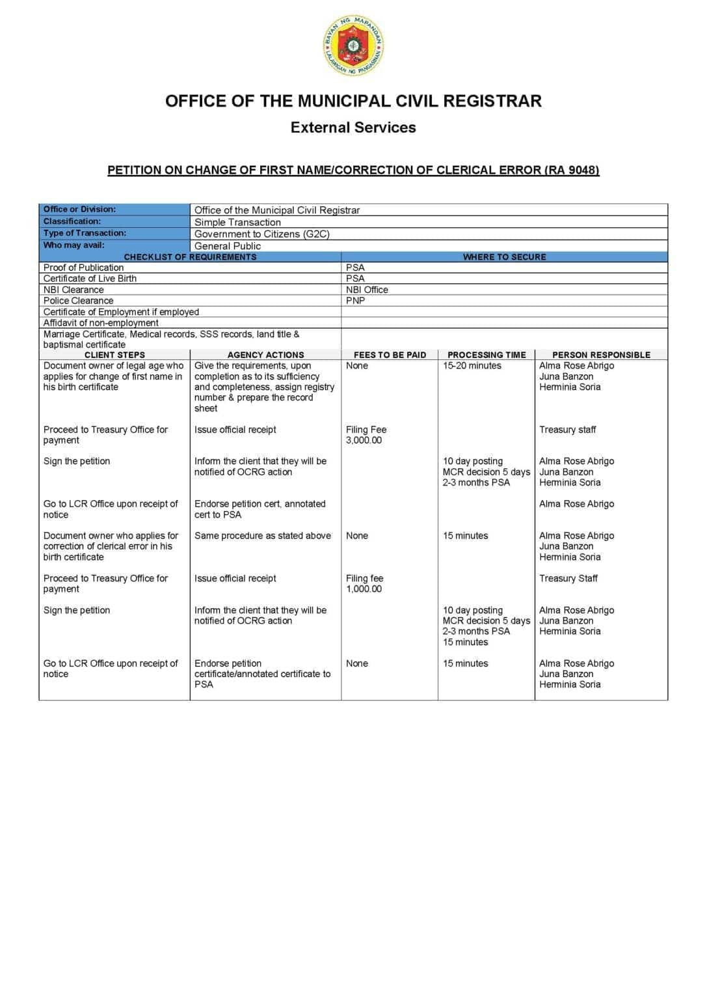

Civil Registry & Vital Records
Name Correction (RA 9048)
Correct your birth certificate under RA 9048. ₱3,000 for name change, ₱1,000 for clerical error.
Description
Republic Act No. 9048 authorizes the city or municipal civil registrar to correct clerical or typographical errors in civil registry entries without the need for a judicial order. This covers corrections in first names, nicknames, or minor spelling errors. This process does not apply to changes in gender, date of birth, or other substantive entries.
Requirements
- Proof of Publication (from PSA)
- Certificate of Live Birth (from PSA)
- NBI Clearance
- Police Clearance (from PNP)
- Certificate of Employment (if employed) / Affidavit of non-employment
- Marriage Certificate, Medical records, SSS records, land title, baptismal certificate
Procedure
- Visit the Municipal Civil Registrar’s Office and submit all required documents.
- File the petition for correction of clerical error.
- Pay the required fees at the Municipal Treasurer’s Office.
- Wait for the publication period to be completed.
- After publication and verification, claim the corrected birth certificate from the MCR.
Scanned Document
Scanned page from the official Mapandan Citizen's Charter listing the requirements, fees, processing time, and responsible staff for the service.

Related Services
No related services available.